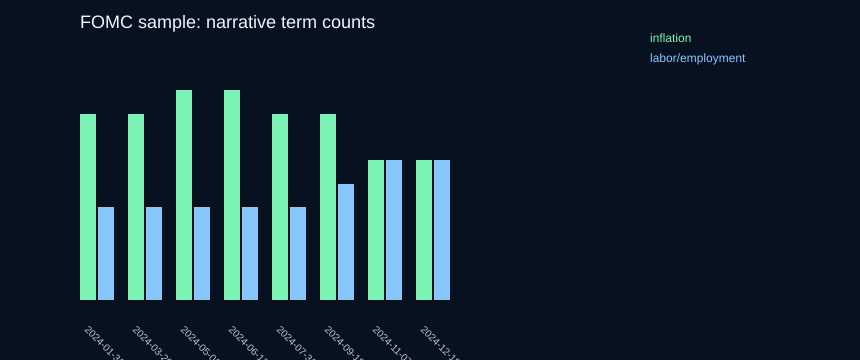
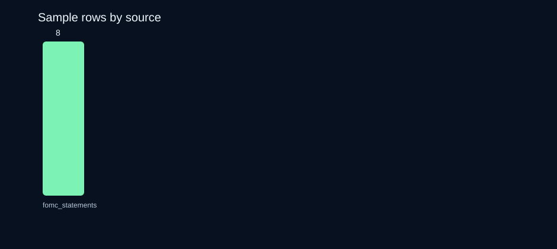
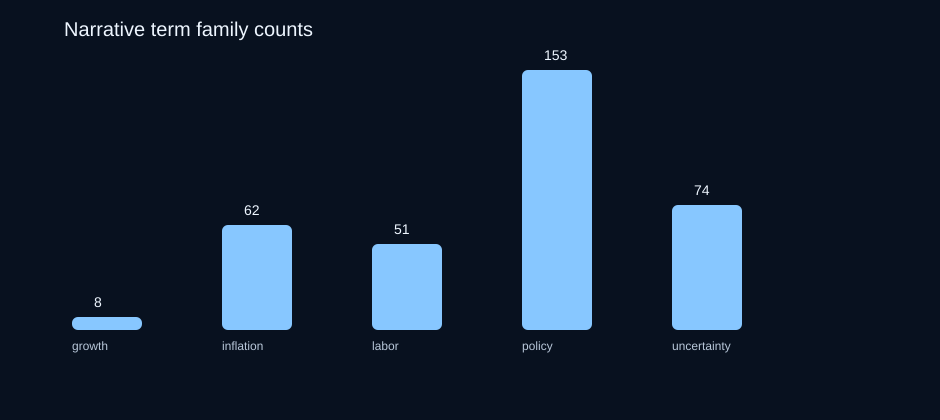

Macro Narrative Starter Dataset + Signal Notebook
Test macro narrative signals today without first building the public-text data pipeline.
A reproducible public macro text starter bundle: source manifest, cleaned sample rows, schema, QA notes, notebook plan, and chart-ready examples for narrative momentum research.
public textmacro researchnarrative momentumauditable source URLsno alpha promises
Download free sample v0.1 View sample rows View source manifest Read QA reportWhy this exists
The pain
Before testing macro text ideas, researchers burn days on source discovery, cleaning, date alignment, provenance notes, schemas, and leakage-safe notebook setup.
The shortcut
This package gives you auditable public-source rows, source URLs, data dictionary, reproducibility scripts, chart assets, and notebook scaffolding.
Proof charts



Sample rows
| Date | Source | Title | Tags | URL |
|---|---|---|---|---|
| 2024-01-31 | fomc_statements | Press Release | inflation; labor; growth; policy; uncertainty | source |
| 2024-03-20 | fomc_statements | Press Release | inflation; labor; growth; policy; uncertainty | source |
| 2024-05-01 | fomc_statements | Press Release | inflation; labor; growth; policy; uncertainty | source |
| 2024-06-12 | fomc_statements | Press Release | inflation; labor; growth; policy; uncertainty | source |
| 2024-07-31 | fomc_statements | Press Release | inflation; labor; growth; policy; uncertainty | source |
| 2024-09-18 | fomc_statements | Press Release | inflation; labor; growth; policy; uncertainty | source |
| 2024-11-07 | fomc_statements | Press Release | inflation; labor; growth; policy; uncertainty | source |
| 2024-12-18 | fomc_statements | Press Release | inflation; labor; growth; policy; uncertainty | source |
SKUs
Free sample
Manifest, schema, real sample rows, charts, QA report, notebook plan. Live now.
DownloadStarter
One source family, clean TSV/Parquet, basic narrative notebook, prompt recipes. Checkout pending user-owned payment rail.
Flagship
Multi-source bundle, full notebooks, charts, QA report, source/citation pack. Checkout pending user-owned payment rail.
Team license
Flagship plus internal sharing rights and 90 days of updates. Checkout pending user-owned payment rail.
Launch-ready paid checkout copy
Headline: Test macro narrative signals today without building the public-text data pipeline.
What you get: clean macro text rows with source URLs and dates, source manifest with license/terms notes, data dictionary, QA report, narrative momentum notebook, chart templates, prompt recipes, and versioned zip download.
Refund policy: 7 days if files are materially not as described. No refunds for failing to produce trading profits.
Not investment advice
This is a research workflow/data product, not a signal guarantee, investment advice, or promise of returns. It packages auditable public text and examples so you can do your own research faster.